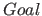
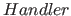
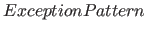
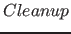

Next: Higher-Order Calls Up: Overview Previous: Example Contents
All exceptions, including those raised by built-ins and interruptions, can be caught by catchers. A catcher is a call in the form: catch(,,) which is equivalent to , except when an exception is raised during the execution of that unifies . When such an exception is raised, all of the bindings that have been performed on variables in will be undone, and will be executed to handle the exception.
The call call_cleanup(,) is equivalent to call( ), except that is called when succeeds determinately (i.e., with no remaining choice point), when fails, or when raises an exception.
), except that is called when succeeds determinately (i.e., with no remaining choice point), when fails, or when raises an exception.
Claudio Cesar de Sa 2016-05-29